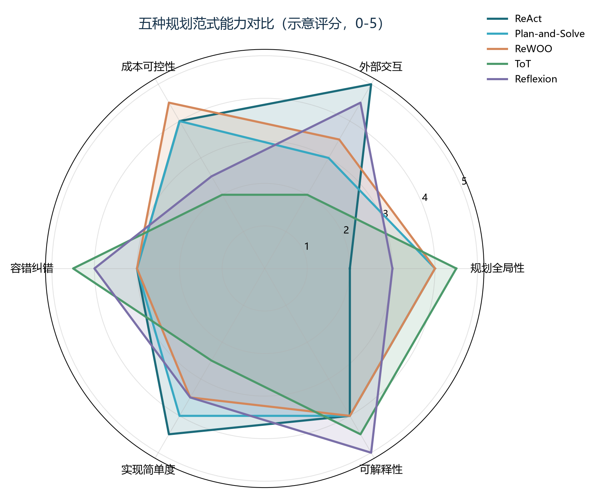
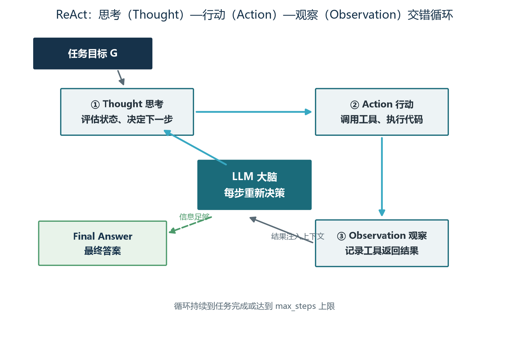
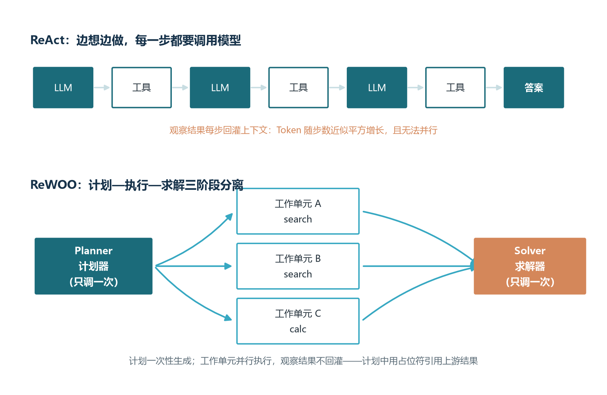
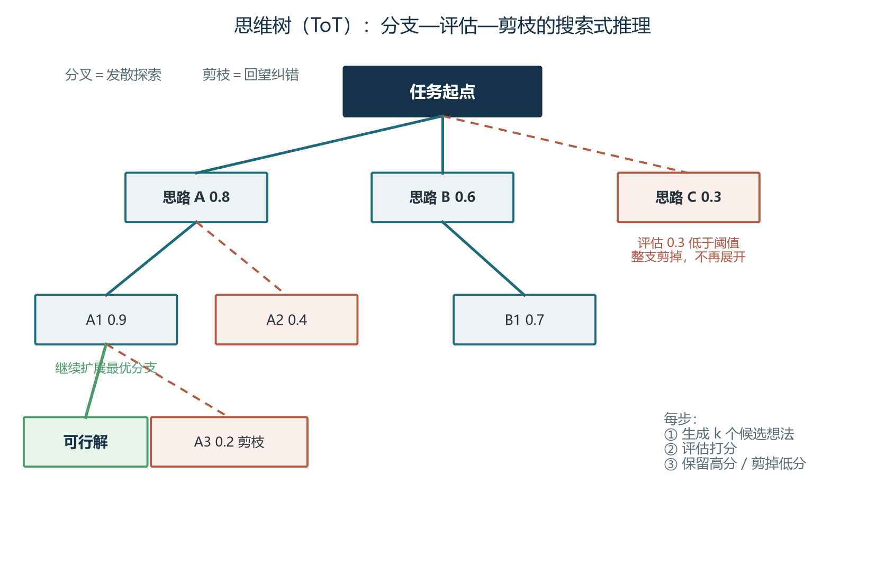
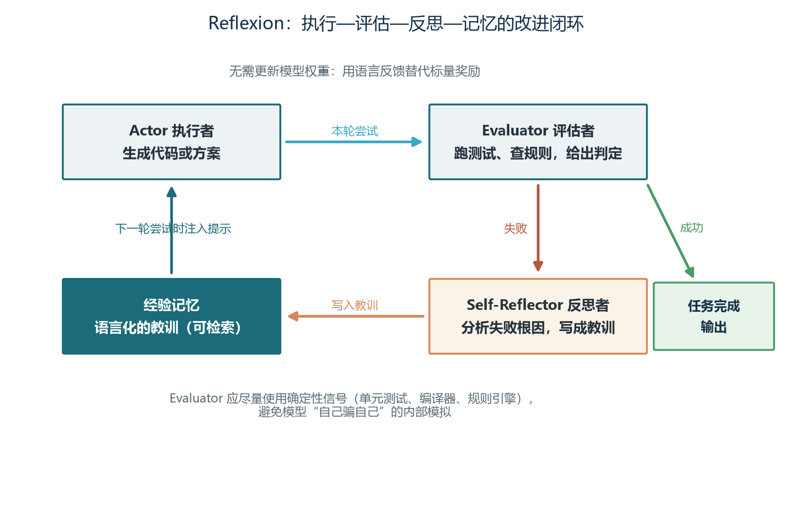

前言：让 Agent 学会先想后做
从卷七到卷十一，我们陆续为模型装上了语言器官（提示词工程）、知识器官（RAG 与向量数据库）、行动器官（工具调用与 MCP）和记忆器官（记忆系统与状态持久化）。到了本卷，还差最后也是最关键的一件器官——思维。一个没有规划能力的 Agent，就像一位没有导航、不看地图、凭感觉开车的司机：在熟悉的街区里还能转悠几圈，一旦进入陌生的城市，大概率原地打转或者南辕北辙。规划与复杂推理，正是让 Agent 从“能说会道”走向“能谋善断”的那一步。
本卷的核心问题可以概括为一句话：模型的单次生成能力已经足够强，为什么多步任务还是会失败？答案藏在“步”字里。每一步的小概率错误，会在多步执行中复利式累积；走错的路没有回头机制；贪婪的局部决策缺少全局蓝图。围绕这些问题，研究者提出了一整套技术谱系：ReAct 让模型边想边做，Plan-and-Solve 让模型先想后做，ReWOO 把想与做彻底解耦，思维树让模型左右权衡、迷途知返，Reflexion 让模型吃一堑长一智。这些名字你可能在各种文章里见过，本卷要做的，是把它们放回同一条演进脉络里，讲清每一项技术到底解决了什么、代价是什么、什么时候该用、什么时候不该用。
本卷与卷四还有一层呼应。卷四讲过推理模型：o1、DeepSeek-R1 这类模型通过在回答前生成更长的内部思维链，把“想”内化进了模型本身。于是有工程师会问：模型自己都会深度思考了，规划技术还有必要吗？本卷 1.4 节将专门回答这个问题——推理模型是更聪明的大脑，规划技术是更合理的工作法，两者解决的是不同层面的问题，而且在生产系统中互为放大器。理解这层关系，你在做架构选型时才不会非此即彼。
学完本卷，你将能够：
- 说清 ReAct 循环的工作原理，读懂并编写 ReAct 提示模板，用极少的代码搭出一个边想边做的最小 Agent；
- 区分 Plan-and-Solve 与 ReWOO 的取舍逻辑，判断一个任务该先出全局蓝图，还是该把执行层解耦成可并行的计划-执行-求解三段式；
- 理解思维树与蒙特卡洛树搜索的分支、评估、剪枝机制，能算一笔搜索成本账，知道高难任务何时值得为“推理保险”付费；
- 掌握 Reflexion 三角色闭环的搭建方法与生产级循环控制清单，让你的 Agent 在真实流量下既想得清楚，也跑得安稳。
本卷与三卷内容联动最紧密：卷七的提示词工程（ReAct 模板就是提示词工程的高级形态）、卷十的工具调用（所有行动都要落在工具上）、卷十一的记忆系统（Reflexion 的经验记忆是记忆系统的一种特殊形态）。读到相应章节时，建议回翻对应卷次对照理解。另外，本卷出现的技术都有论文出处，正文会在首次出现时给出年份线索，便于你课后查证原文——读一手论文是这个领域最好的进修方式。
第一章 Agent 的思维问题：单次生成为什么不够用
1.1 单次生成的三堵墙
大语言模型在单轮任务上的表现已经足够惊艳：写一段文案、解释一个概念、生成一个函数、翻译一篇短文，都是一问一答、当场交付。但只要把任务从“一问一答”升级为“多步达成”，问题就暴露出来。让它“调研三款产品的优缺点并生成对比报告”，它可能凭训练语料里的旧印象张口就来；让它“先查航班再比价再推荐”，它可能跳过中间步骤直接编一个答案。这不是模型不够聪明，而是单次生成的范式天生缺了三样东西，我们可以把它们称为三堵墙。
第一堵墙是知识截止。模型的参数化知识冻结在训练完成的那一刻，涉及最新事件、实时行情或企业私有数据时，它只能靠旧知识硬答，于是幻觉频出。第二堵墙是错误传播。多步推理像接力赛，早期的微小偏差会被后续步骤不断放大：第一步把“同比增长”理解成“环比增长”，后面所有计算再精确也是在错误的地基上盖楼。第三堵墙是缺乏全局规划。模型的默认策略是贪婪的局部最优——每一步都选眼前最顺的路，却不会像人类那样先通盘看一眼再动手，更不会在发现走错时回头。结果就是：每一步看起来都合理，串起来却南辕北辙。
把这三堵墙放在一起看，会发现它们指向同一个深层原因：模型是一个优秀的“答辩者”，却未必是一个合格的“项目经理”。答辩者只需要对单个问题给出漂亮的回答，项目经理却要对整个任务的路径、资源与风险负责。要让模型承担项目经理的职责，就必须把一部分控制权交给它——传统软件的控制流由程序员用 if-else 写死，而 Agent 的控制流由模型根据当前状态动态决定。控制流的这次转移，正是 Agent 获得自主性的来源，也是本卷所有规划技术要回答的核心命题：如何让被交出控制权的模型，决策得又稳又好。
1.2 误差累积：一条会放大的裂缝
误差累积的威力用简单的算术就能看清。假设一个多步任务共有二十步，每一步的正确率高达百分之九十五——单看任何一步这都是相当可靠的水平。但整条链路全部正确的概率是零点九五的二十次方，约等于百分之三十六。换句话说，即便每一步都是优等生，走完二十步后有三分之二的概率在某处出过错。这就是多步任务的第一性原理：步数越多，对单步质量的要求越苛刻，而模型恰恰无法保证百分之百的单步质量。规划技术的使命，并不是把每一步都做到完美，而是打破“全对才算对”的死局——允许某些步骤出错，但让系统能发现、能纠正、能回头。
误差在多步执行中有三类典型的放大器。第一类是上下文污染：第 3 步产生的一条错误观察被写进上下文后，会成为第 4 步、第 5 步决策的“事实依据”，错误像墨汁滴进清水一样扩散。第二类是目标漂移：Agent 在长任务中逐渐偏离初始目标，比如让它调研竞品，它却在第 10 步开始研究无关的行业新闻——每一步都“有点道理”，合起来已经离题万里。第三类是工具误用的连锁反应：一次错误的参数传入返回了看似合理实则无关的结果，Agent 基于它继续构建后续步骤，直到某个环节突然崩塌。
针对这条会放大的裂缝，本卷的五大技术从三个方向堵漏。方向一是让每一步更稳：ReAct 让模型在行动前显式思考、行动后读取真实观察，用接地信息抑制幻觉。方向二是让全局有蓝图：Plan-and-Solve 与 ReWOO 先生成完整计划再执行，从源头减少步骤缺失与目标漂移。方向三是让错误可回退、可学习：思维树与蒙特卡洛树搜索提供“走错了就换条路”的回退机制，Reflexion 则让每一次失败都转化为下一次尝试的养分。三条方向并不互斥，成熟的生产系统往往三者并用。
1.3 五大规划范式总览
先给五大技术各写一句“身份证”。ReAct（2022 年）：思考、行动、观察交错循环，是最基础也最常用的 Agent 骨架。Plan-and-Solve（2023 年）：先把任务拆成完整计划，再按计划逐步执行，用全局蓝图换取步骤完整性。ReWOO（2023 年）：把计划、执行、求解拆成三个独立阶段，观察结果不再回灌上下文，换来 Token 成本的大幅下降与执行的可并行性。思维树 ToT（2023 年）：把推理从一条线扩展成一棵树，多路径生成、评估、剪枝、回溯。Reflexion（2023 年）：失败后生成语言化的教训存入记忆，用于下一次尝试，用自然语言实现了强化学习的效果。此外还有作为集大成者的 LATS（2023 年），它把蒙特卡洛树搜索与 LLM 融合，本卷第三章将专门展开。

图1-1 用六个维度勾勒了五种范式的相对强弱，需要强调这是教学示意而非精确评测：规划全局性衡量技术能否在行动前通盘考虑；外部交互衡量它与工具和环境的配合深度；成本可控性反映单位收益的调用开销；容错纠错看它发现并修正错误的能力；实现简单度与可解释性则是工程落地的友好程度。读完雷达图你会发现一个重要事实：没有全能冠军。ReAct 全面但不突出，ToT 与 Reflexion 在容错与可解释性上亮眼却在成本上吃紧，计划式范式全局性好却害怕环境突变。范式选择的本质，是拿任务特征去匹配这些长短板。
具体怎么匹配？看任务的三个特征。一看环境的动态性：环境多变、信息要边做边拿的任务，选 ReAct；环境稳定、步骤可预知的任务，选计划式。二看步骤的结构化程度：流程清晰的流水线任务交给 Plan-and-Solve 或 ReWOO，解法开放的谜题类任务交给 ToT。三看有没有明确的评估信号：有单元测试、规则引擎这类确定性裁判的任务，Reflexion 的收益最大；没有裁判的任务，反思机制就无从谈起。表1-1 汇总了五种范式的速写，建议先建立整体印象，本章之后各节再逐一深入。
| 范式 | 核心思想 | 擅长场景 | 主要代价 |
|---|---|---|---|
| ReAct | 思考、行动、观察交错循环 | 动态问答、工具调用、客服 | 每步都要调模型，成本随步数上升 |
| Plan-and-Solve | 先生成完整计划再逐步执行 | 数据分析、报告生成、代码重构 | 初始计划质量决定成败 |
| ReWOO | 计划、执行、求解三阶段解耦 | 多源检索、可并行的批处理 | 环境突变时需要重规划 |
| ToT | 多路径分支、评估与剪枝 | 数学谜题、创意写作、策略规划 | 调用量随分支与深度指数增长 |
| Reflexion | 失败后生成语言化教训再重试 | 代码生成、测试驱动开发 | 依赖可靠的评估信号，延迟高 |
1.4 推理模型与规划技术的关系
卷四讲过，2024 年 9 月 OpenAI 发布 o1 推理模型，用“回答前思考更久”换取“答得更准”，随后 DeepSeek-R1 以极低训练成本复现了这一能力并彻底开源。推理模型的本质，是把思维链从提示词技巧内化成了模型的生成行为：它在给出答案之前，会先生成一段很长的内部推理，自我验证、自我修正。于是问题来了：大脑都这么聪明了，还需要本卷这些“外置”的规划技术吗？
答案是需要的，因为两者工作在不同的层面。推理模型提升的是单次决策的质量——同样被问“下一步该做什么”，它给出的答案更深思熟虑；规划技术组织的是多次决策的结构——谁来决定决策的顺序、决策之间如何衔接、错了如何回退。打个比方：推理模型是更优秀的飞行员，规划技术是更科学的航班调度系统。再优秀的飞行员也替代不了调度系统，因为后者解决的是“很多个航班如何组成一张可靠的航线网”的问题。更进一步说，有几件事是任何模型内部推理都无法替代的：工具调用返回的真实世界反馈，推理模型自己看不到；跨尝试沉淀的经验记忆，不存在于单次前向传播里；多个执行单元的并行推进，更不是一次生成能完成的。
反过来，规划技术也在放大推理模型的价值。用认知科学的双过程理论说：系统一快速直觉，系统二审慎缓慢。推理模型最大的贡献，是把昂贵的“系统二”变得便宜了——以前一条高质量思维链要靠少样本提示精心引导，现在模型自带。而搜索式规划技术（思维树、蒙特卡洛树搜索）回答的是另一个问题：既然思考还是有限成本的，该把思考花在哪个分支上？推理模型让每个节点的评估更准，搜索框架让宝贵的思考投入最有希望的路径，两者叠加才是“既想得深、又想得对路”。生产选型的实用结论是：模型层的升级（换更强的推理模型）与规划层的升级（换更合适的范式）是两条独立的改进轴，应该分别评估、分别调优，而不是指望一个解决所有问题。
第二章 ReAct 与计划式范式：边想边做还是先想后做
2.1 ReAct：思考与行动的交错循环
2022 年 10 月，普林斯顿大学与谷歌的研究者发表了 ReAct 论文，这个名词是 Reasoning 与 Acting 的合体。要理解它的贡献，得先看它出现之前的两个流派：一派以思维链为代表，让模型“会思考但不会行动”——推理再漂亮，也只能基于训练时记住的旧知识，触不到真实世界；另一派以 WebGPT 等行动导向方法为代表，让模型“会行动但不会思考”——直接生成搜索词或点击指令，过程像黑盒，错了也不知道错在哪。ReAct 的核心洞见只有一句话：推理为行动提供方向，行动为推理提供证据，两者必须交错进行。
ReAct 的运行机制可以形式化为一条轨迹：模型每一步先输出一段思考（Thought），判断当前状态、决定下一步做什么；接着输出一个行动（Action），通常是调用某个工具；系统执行工具并把观察结果（Observation）回填到上下文中；然后模型基于新的信息开始下一轮思考。如此循环，直到模型认为信息足够，输出最终答案。走一个具体例子：任务是“某公司现任首席执行官毕业于哪所大学”。第一轮思考：“我需要先确认现任首席执行官是谁。”行动：调用搜索工具查询；观察返回人名。第二轮思考：“接下来查这个人的教育背景。”行动：再次搜索；观察返回毕业院校。第三轮思考：“信息已经足够。”输出最终答案。三步之内，问与答之间架起了一条由真实证据铺成的路。

ReAct 为什么有效？三个原因。其一是观察接地：每一步行动都从真实环境拿回证据，模型的推理被锚定在外部事实上，幻觉空间被大幅压缩——它不再需要凭记忆猜首席执行官是谁，因为观察结果就摆在那里。其二是思维轨迹可解释：任务结束后，整条思考-行动-观察的轨迹就是一份完整的决策档案，人类可以逐条审计，出了错能精确定位到哪一步的哪个判断，这对生产系统的调试与合规至关重要（卷十五的全链路追踪正是把这条轨迹工程化）。其三是错误可局部纠正：一步走偏了，只要观察结果如实地反映“此路不通”，下一轮思考就有机会换方向。论文的实验数据支持这些判断：在多跳问答基准 HotpotQA 上，ReAct 比纯思维链准确率高出约六个百分点；在交互决策环境 ALFWorld 上，比纯行动方法高出三十四个百分点。
2.2 ReAct 提示模板与工程要点
ReAct 的全部魔力，几乎都浓缩在一段提示模板里。在使用函数调用接口之前，经典做法是用文本格式约束模型的行为：明确规定模型只能按“思考、行动、观察”的固定结构输出，解析器才有稳定的文本可解析。下面是社区流传最广的 ReAct 模板（LangChain 的 hwchase17/react 版本，翻译并简化）：
尽量回答用户的问题。你可以使用以下工具：
{tools}
请严格遵循以下格式：
Question: 需要回答的输入问题
Thought: 思考该做什么
Action: 要采取的动作，必须是 [{tool_names}] 之一
Action Input: 传给工具的输入
Observation: 工具返回的结果（由系统填充，模型不要自己编造）
……（思考、行动、观察可以循环多次）
Thought: 我已经知道最终答案了
Final Answer: 针对原始问题的最终答案
开始！
Question: {input}
Thought: {agent_scratchpad}这段模板里藏着几条工程经验。第一，格式约束要像法律条文一样严格：明确告诉模型“观察由系统填充，不要自己编造”，否则模型会幻觉出工具返回值，整个接地机制就失效了。第二，温度参数建议压到零点一到零点二：ReAct 依赖格式稳定与逻辑连贯，创造性在这个场景里是负资产。第三，少样本示例两到四个为宜：太少格式学不像，太多又分散注意力。第四，工具的文档字符串要写清“什么时机该调我”：模型选择工具的依据主要就是这段描述，卷十的工具描述规范在此完全适用。第五，观察结果要截断与摘要：一条搜索结果动辄几千字，原样回灌很快撑爆上下文，实践表明截断到千字以内可节省三到五成 Token，还常常提升推理准确性。第六，必须设置最大步数与超时机制，这一点第五章会展开成完整的循环控制体系。
在生产实现上还有一条分岔路：文本模板对任何模型都通用、最灵活；而函数调用模式（卷十）把工具列表以 JSON Schema 提供，模型原生输出结构化调用参数，省去了文本解析的脆弱环节，是当前更推荐的方式。两者可以结合：用函数调用执行工具，同时保留显式的思考字段让模型先想后调。再看一个客服场景的落地样例：客服 Agent 通常配备订单查询、物流追踪、退款处理、知识库检索与人工转接五类工具，查询类可自由调用，修改类需二次确认，退款直接走人工审批；系统检测到用户情绪激动时立即转人工。这些设计共同指向一个原则：ReAct 给了 Agent 自主的骨架，但自主的边界要由工程来画。
2.3 Plan-and-Solve：先全计划再执行
ReAct 好用，但它有个先天特质：每一步只看眼前。这带来两个问题——步骤多的任务容易漏步（该做的五件事只做了三件），以及边想边算容易在中间环节出错。2023 年 5 月发表的 Plan-and-Solve 论文，针对的正是当时流行的零样本思维链（一句“让我们一步一步思考”）的三大缺陷：计算错误、步骤缺失与语义误解。它的药方朴素而有效：把任务显式拆成两个阶段，规划阶段模型只输出结构化的步骤列表，不执行任何操作；求解阶段再按计划逐步执行，并把已完成步骤的结果作为后续步骤的上下文。
它的经典提示词值得背下来：“让我们先理解问题并制定一个解决计划，然后执行计划、一步步解决问题。”这个“先出施工图再开工”的思想，和装修房子的道理如出一辙：不画图纸直接砸墙，工人每一步都在临场发挥，漏装一个插座就要返工半天；有了图纸，每一步都有据可依，遗漏在图纸上就能被发现。论文还提出了加强版 PS+ 提示，追加两条指令：为每一步计算提取相关变量与中间结果，并在给出最终答案前对计算过程做双重检查。在包含 GSM8K 在内的十个数学与常识推理数据集上，PS+ 一致优于零样本思维链，并达到了与八样本思维链相当的水平——用零样本的标注成本，逼近了少样本的效果。
计划赶不上变化怎么办？Plan-and-Solve 给出的答案是重规划机制：当某个步骤执行失败或结果异常时，系统把原计划、已完成步骤与失败原因一起喂给模型，让它重新生成剩余步骤的计划，然后继续执行。这种“计划、执行、再计划”的循环，让先规划后执行的模式在动态环境中也有相当强的韧性。它最适合的，是步骤可枚举、依赖关系清晰、环境相对稳定的任务：数据分析流水线、报告生成、代码重构。使用时有三个常见陷阱要避开：一是计划写得过于笼统，“处理数据”这种步骤等于没写，应落成“读取 CSV 并检查字段完整性”这样的可执行粒度；二是步骤间的依赖没有标注清楚，第三步需要第一步的输出却没人告诉执行者，执行时必然报错；三是长任务中忽视环境变化，数据源更新、接口变更后仍按旧计划硬跑，该触发重规划时没有触发。
2.4 ReWOO：把推理与观察解耦
计划式思想走到极致，就得到了 ReWOO。它的论文标题直译过来是“把推理与观察解耦”，矛头直指 ReAct 的两大成本痛点。痛点一：ReAct 每一步的观察都要回灌上下文，上下文越滚越长，而每一次模型调用都要重复支付前面全部历史的费用——一个六步的任务，Token 消耗随步数近似平方增长。痛点二：串行依赖。每一步都要等上一步的观察回来才能继续，明明三个独立的查询可以同时发出，却只能排成一列纵队。2023 年发表的 ReWOO 给出的解法，是把整个流程拆成三个各司其职的阶段。
第一阶段是计划器（Planner）：模型只被调用一次，一次性生成完整的执行计划，计划里每个单元声明用什么工具、传什么参数；需要引用其他单元结果的地方，用占位符表示而不填入真实观察。第二阶段是工作单元（Worker）：程序按计划调度工具执行，彼此没有依赖的单元并行执行，工具返回的观察只写入各自的变量，不进入模型上下文。第三阶段是求解器（Solver）：所有单元执行完毕后，把原始任务与全部观察一次性交给模型，由它综合出最终答案。整个过程模型只调用两次，其余全是确定性的程序调度。图2-2 把两种范式的结构差异画在了一起，对比非常直观。

这套结构带来两大工程红利。红利一是成本：观察文本不回灌，上下文长度不再随步数爆炸，论文报告在多跳问答任务上能把 Token 开销压缩到原来的几分之一，准确率还不降反升——毕竟求解器拿到的是全部证据的干净汇总，而不是被多轮观察稀释的长上下文。红利二是并行：无依赖的工作单元并发执行，总延迟从“各步之和”变成“最慢单元”，对接了多个外部接口的流水线任务尤为明显。下面的计划 JSON 展示了占位符机制的样子：
{
"task": "对比甲、乙两家公司 2025 年的营收规模并计算差距",
"plan": [
{ "id": "E1", "depends_on": [], "tool": "web_search",
"input": "甲公司 2025 年全年营收" },
{ "id": "E2", "depends_on": [], "tool": "web_search",
"input": "乙公司 2025 年全年营收" },
{ "id": "E3", "depends_on": ["E1", "E2"], "tool": "calculator",
"input": "计算 #E1 与 #E2 数值的差值与倍数" }
]
}走读这份计划：E1 与 E2 的依赖列表为空，调度器可以把两个搜索同时发出；E3 声明依赖 E1 与 E2，输入里的井号记号就是占位符，执行时被替换为上游观察的真实数值，最后由求解器统一作答。当然，解耦是有代价的：计划在执行前就完全定型，一旦某个观察与预期严重不符（比如搜出来的公司根本不对），静态计划无法自行调整，必须触发重规划或退回 ReAct 的动态模式。因此工程上流行的组合拳是分层使用：计划式范式出蓝图、管预算，蓝图中的动态交互步骤再交给 ReAct 风格的执行器临场处置。表2-1 汇总了三种范式的关键差异，供选型时快速对照。
| 维度 | ReAct | Plan-and-Solve | ReWOO |
|---|---|---|---|
| 决策方式 | 边推理边行动 | 先出全局计划再执行 | 计划与执行彻底解耦 |
| 模型调用 | 每个思考步骤一次 | 规划一次，每步骤一次 | 计划器与求解器各一次 |
| 观察结果 | 回灌上下文影响下一步 | 作为后续步骤的上下文 | 不回灌，求解时统一汇总 |
| 并行能力 | 弱，以串行为主 | 弱，按步骤推进 | 强，无依赖单元可并行 |
| 环境适应性 | 强，随时改变方向 | 中，依赖重规划 | 弱，静态计划需显式重规划 |
环境多变选 ReAct，流程稳定选 Plan-and-Solve，成本敏感且步骤可提前声明选 ReWOO。三者不是单选题：成熟系统常用计划式做骨架、ReAct 做关节、预算上限做保险丝。判断口诀是问三个问题——任务能不能提前写出步骤清单？步骤之间有多少真实依赖？环境在执行期间会不会变？三个答案分别指向三种范式的适用区。
第三章 搜索式推理：思维树与蒙特卡洛树搜索
3.1 思维树：分支、评估与剪枝
前面两章的范式，无论边想边做还是先想后做，推理路径都是一条线：走一步，走第二步，没有回头路。但人类解决难题时的真实过程不是线性的——面对一道几何题，我们会在草稿纸上画出两三种辅助线的方案，掂量每种方案的前景，挑最有希望的深入，发现死胡同就换一条。2023 年发表的思维树（ToT）论文，把这种“头脑风暴加批判性评估”的过程搬进了模型：推理过程被建模为一棵树，每个节点代表一个中间状态（部分解），每条边代表一个想法步骤；模型在每个节点生成多个候选想法，评估每个候选的价值，向最有希望的分支扩展，必要时回溯换路。
这背后的理论影子是心理学家卡尼曼的双过程理论：系统一快速、直觉、贪婪，对应模型的默认生成模式与思维链；系统二缓慢、审慎、全局，对应思维树的多路径搜索。思维链是让模型“多说几句心里话”，仍是单路径的系统一；思维树则真正赋予模型停顿、比较与反悔的能力——这是推理方式的结构性升级，而不只是提示词的措辞调整。落地一套思维树，要回答四个设计问题：思维如何分解（一个“想法”的粒度多大——可以是填字游戏里的一个词、24 点游戏里的一次运算、写作任务里的一段大纲）；候选如何生成（每个节点产几个候选想法）；状态如何评估（用什么标准给中间状态打分）；以及用哪种搜索算法遍历这棵树。

状态评估函数是整棵树的灵魂，它决定了剪枝的刀快不快、准不准。工程上有两种实现：规则式评估便宜且确定，比如 24 点游戏里按剩余数字与目标 24 的距离打分，但只适用于约束明确的问题；模型式评估灵活，能处理开放任务，比如判断一份写作大纲是否切题连贯，但每次评估都是一次模型调用，成本高且有偏好。生产上通常两者结合：先用规则快速滤掉明显无效的状态，再用模型给剩下的候选精评。效果方面，论文给出的数字很有说服力：在 24 点游戏上，GPT-4 的解决率从思维链的百分之四跃升到思维树的百分之七十四；在五乘五的迷你填字游戏上，字母级准确率从约百分之十六提升到约百分之六十。规律很清晰：问题越是可以分解成离散的思维步骤、最优路径越是难以预先判断，思维树的收益越大。
3.2 搜索策略与成本账
树画好了，接下来要决定遍历策略，这直接决定成本曲线的形状。广度优先搜索逐层展开：先生成本层所有候选，评估后只保留最有希望的 k 个再向下一层，不容易漏掉全局最优，但宽而浅、调用量大；束搜索是它的工程变体，每层固定保留 beam 宽度个节点，是广度与成本的折中。深度优先搜索沿一条路径一路深入，直到找到解或判定为死路再回溯换路，内存占用小、适合需要深挖的问题，代价是可能错过旁支上的更优解。表3-1 把三种策略放在了一起。
| 策略 | 工作方式 | 优势 | 代价与适用场景 |
|---|---|---|---|
| 广度优先 | 逐层展开，每层保留最优的 k 个 | 不易漏掉全局最优解 | 调用量大，适合解空间较小的问题 |
| 深度优先 | 沿单路径深入，死路即回溯 | 内存占用小，可深挖 | 可能错过旁支最优，适合深解型问题 |
| 束搜索 | 每层固定保留 beam 宽度个节点 | 广度与成本的折中 | 宽度设小同样会漏解，通用性最好 |
现在来算这笔每个 ToT 使用者都必须会算的成本账。设分支因子为 b、搜索深度为 d，整棵树完整展开需要约 b 的 d 次方次生成调用：b 取 3、d 取 5，就是二百四十三次模型调用——而这只是生成，评估调用还要另算。所以工程上必须搭配四道降本措施：其一，阈值剪枝，评估分数低于阈值（经验值零点三到零点五）的分支直接放弃，早停机制能砍掉大部分无效调用；其二，限宽限深，用束搜索把每层候选压到常数个；其三，提前终止，找到满意解立即收工，不求最优只求够用；其四，评估缓存，相同或相似状态复用历史评分。一语概括思维树的商业本质：它是一份“推理保险”，在法律推理、医学诊断、投资策略这类一步走错代价高昂的任务上，多花十倍算力买回几十个百分点的成功率，物有所值；在日常问答与客服对话上，这份保险费通常交得不值，ReAct 或计划式范式足够了。
直觉来得快，但复杂问题需要慢思考来兜底：先发散出多条路，再评估，后收敛。
—— 改编自卡尼曼《思考，快与慢》的双过程理论
3.3 从树到图：Graph of Thoughts
思维树有一个隐含假设：想法之间只有父子关系，任何想法只来自唯一的父节点。但真实的思考不是这样——两份半成品方案可以取长补短合成一份更好的，一个粗糙的想法可以反复打磨迭代。2024 年发表的图思维（Graph of Thoughts，GoT）把推理结构从树推广为任意图，节点之间允许合并、复用与迭代精化。它定义了三类超出树结构的操作：聚合，把多个节点的输出合并成一个更强的节点，比如把多份分章摘要融合成一份总摘要；精化，对同一个节点反复自我改进，比如让模型连续打磨同一段文字；分支，即思维树已有的发散能力。
图结构在一些经典任务上展现出确定的收益：排序算法的分解（分治 naturally 映射为图操作）、大文档的多轮摘要、多源观点的融合去重。打比方说，思维树像一张家族族谱，每个孩子只有一个父亲；图思维像一张社交网络，任何两个想法都能建立联系。代价同样明显：图的构建、状态管理与去重要比树复杂一个量级，评估调用量也更难控制，因此 GoT 在工程上更适合离线的深度内容加工，比如报告综合、知识整理（与卷八的 RAG 组合做跨文档综合是它的甜区），而不适合追求响应速度的实时交互。给实践者的建议是：先把思维树的场景做扎实，确认确实存在“想法需要合并”的真实需求后，再引入图结构，不要为了图更漂亮而用图。
3.4 蒙特卡洛树搜索：从 AlphaGo 到 LATS
思维树还有一个没有回答的问题：树很大、算力有限时，该优先探索哪些分支？蒙特卡洛树搜索（MCTS）正是为这个问题而生。它由 Kocsis 与 Szepesvari 在 2006 年提出，先在围棋程序中崭露头角，2016 年 AlphaGo 用 MCTS 加深度神经网络战胜李世石，让这套算法名满天下。2023 年提出的 LATS（语言智能体树搜索）把这一成熟算法与 LLM 融合：树的每个节点是一次 ReAct 风格的步骤，节点保存从根到当前的完整对话历史；LLM 同时扮演两个角色——像 AlphaGo 的策略网络一样生成候选动作，像价值网络一样评估局面好坏。用一句话说，LATS 统一了推理、行动与规划。
MCTS 的每一轮迭代分四个阶段。选择：从根节点出发，按 UCB 公式挑选最优子节点，一路走到叶子。扩展：在叶子处让 LLM 生成若干候选的下一步动作，长成新的子节点。评估：让 LLM 对新节点自我反思并打分，判断这步棋的优劣，理想情况下还应有环境反馈佐证（比如代码是否通过测试）。回传：把评估分数沿着祖先链一路更新，每个祖先节点的累计价值与访问次数都加一笔。四个阶段循环往复，搜索预算（迭代次数）用完或找到解时停止，然后沿着价值最高的路径取出完整行动序列。
四个阶段里最精妙的是选择阶段的 UCB 公式，它用一行数学解决了“利用还是探索”这个强化学习的根本矛盾。公式可以写成：UCB ＝ 利用项 ＋ c × 探索项。利用项是节点的平均价值，即累计价值除以访问次数——平均回报越高的分支越值得跟进；探索项等于根号下（父节点访问次数的对数除以本节点访问次数）——一个节点被访问得越少，这一项越大，系统就越想去看一眼。探索常数 c 控制性格：c 越大越敢闯，c 越小越恋战，奖励信号稀疏或噪声大的任务应适当调大 c，实践中常取一点四。这个设计有个优雅的性质：从未被访问过的节点探索项为无穷大，保证每个分支至少被探索一次；随着访问次数增加，利用项逐渐稳定、探索项逐渐衰减，算法自动从“广泛撒网”过渡到“重点捕鱼”。打个生活中的比方：UCB 就是“下馆子策略”——常去的那家好评餐厅（利用）与街角新开的店（探索）之间做权衡，新店你没去过，先去试一次，试完按口碑重新排序。
LATS 的成绩单与账单要一起看。成绩单：在代码基准 HumanEval 上结合 GPT-4 达到百分之九十二点七的通过率，在网页任务环境 WebShop 上结合 GPT-3.5 取得七十五点九的平均分，显著优于 ReAct、Reflexion 与思维树——因为它同时具备了系统性搜索、环境实时反馈与反思修正三样能力。账单：每步搜索需要多轮模型调用，总调用量通常是 ReAct 的五到二十倍，延迟与费用同步飙升；实现复杂度也最高，要正确管理树状态、回传逻辑与并发。因此落地路径建议循序渐进：先用 ReAct 验证任务可行性，复杂度上来后引入思维树或 Reflexion，确实需要系统性探索且预算充足时再上 LATS。还有一个值得记住的对比：LATS 与 RLHF 同属“让模型变好”的技术，但方向完全不同——RLHF 在训练阶段改变模型权重，提升能力上限；LATS 在推理阶段组织搜索，把现有能力用得更聪明。一个管出厂，一个管驾驶，互补而不替代。
第四章 反思与自我修正：从失败中学习
4.1 Reflexion：把失败变成教材
让 Agent 从失败中学习，最直白的思路是强化学习：跑很多次，按奖励信号更新模型权重。但这在工程上代价高昂——需要海量训练样本，有灾难性遗忘的风险，更新后的权重还变得不可解释。2023 年提出的 Reflexion 走了一条完全不同的路：模型权重一个都不动，改用自然语言做“梯度”。具体而言，Agent 失败后，由模型把自己的失败经历写成一段语言化的教训（“我上次忽略了空列表的边界情况”），存入情景记忆；下一次尝试时，这段教训被注入提示词，模型带着经验重新出发。它的名字正是 Reflection（反思）与 Reinforcement Learning（强化学习）的合体，论文副标题就叫“语言强化学习”——用文本反馈替代标量奖励，用记忆更新替代权重更新。
整套机制由三个角色协同完成。执行者（Actor）负责干活，生成动作或文本，可以是一个 ReAct 智能体，也可以是直接的代码生成器。评估者（Evaluator）负责裁判，对执行结果给出客观判定——成功或失败，或一个分数。评估者最好是确定性的外部环境：代码编译器、单元测试、规则引擎，这些信号不掺主观水分。反思者（Self-Reflector）负责复盘，在收到失败判定后，分析轨迹找出根因，生成具体的、可执行的改进建议，追加进经验记忆。图4-1 画出了这个闭环：执行、评估、失败则反思、教训入记忆、带着记忆再战，成功则交付输出。

效果用数据说话：在代码生成基准 HumanEval 上，Reflexion 把通过率做到百分之九十一，超过了当时 GPT-4 裸考的百分之八十；在交互决策环境 ALFWorld 上成功率约百分之九十七。规律同样清晰：收益集中在三到五次尝试之内，超过之后成功率提升趋缓，成本却线性上涨。两个陷阱要特别警惕。第一个是反思中毒：如果评估器本身有缺陷或偏见，把正确的输出误判为失败，反思者就会煞有介事地总结出一条错误教训，把执行者越带越偏——反思机制的输入不可靠时，勤反思比不反思更危险。第二个是记忆噪音：教训越积越多，低质量、互相冲突的经验会稀释关键教训的注意力，甚至误导当前任务。防范之道包括对评估器独立验证、定期压缩清理记忆，以及在关键路径保留人工终审。一句话总结：评估信号的确定性，是 Reflexion 成败的分水岭。
4.2 反思提示与经验记忆管理
反思的质量取决于反思提示的设计。差的反思是“下次要更仔细”——等于没说；好的反思要满足两条标准：聚焦根因，最重要的失败原因只有一个，把它用一句话说透；可执行，明确写出下一次的具体改法，让执行者照做即可。下面给出一个代码生成场景的反思者提示模板：
你是一位严格的代码审计员。请分析以下代码失败的根本原因，
并给出具体、可执行的改进建议。
【任务】
{task}
【上一版代码】
{code}
【单元测试输出】
{error}
要求：
1. 用一句话概括根本原因，只聚焦最重要的那一个；
2. 用一句话给出下一次尝试的明确改法，拒绝“更小心”“多检查”这类空话；
3. 如果下面的旧记忆里已有类似教训，请基于新证据深化它，
不要重复表述。
【已有教训记忆】
{memory}
反思：模板里最容易被忽视的是最后一栏“已有教训记忆”：把旧记忆喂给反思者，让它避免翻来覆去总结同一条教训，这是控制记忆质量的第一道闸。记忆管理还有两招进阶。一招是压缩融合：每次写入新教训时，让模型顺便把既有记忆提炼合并，保持记忆总量在少量高密度的规则水平，防止注意力被噪音稀释（长上下文中段遗忘的问题在卷七讲过，同样适用于记忆列表）。另一招是向量检索式召回：把每条教训存入向量数据库，每次尝试只按当前任务的语义相似度召回最相关的三到五条（卷九、卷十一的检索技术在此直接复用）。此外要设计好早停条件，除了最大尝试次数外，还包括：评估分数连续两轮没有改善、反思者连续生成高度相似的教训（说明陷入了固定思路）、Token 预算耗尽。触发任一条件就停止循环，带着当前最优结果退出，比无限反思更划算。
4.3 自我一致性与 C-RAG
4.3.1 自我一致性：让多数派发言
反思是“失败之后学”，还有一种更朴素的自我修正思想：不押注单次生成，而是同一道题让模型独立作答多次，对最终答案做多数表决——这就是 2022 年提出的自我一致性（Self-Consistency）方法。它的依据是：同一问题的多条推理路径中，正确的路径往往殊途同归，错误的路径则各自错得五花八门，因此多数派的答案更可信。它与思维树的区别值得辨析：思维树有结构化的分支、评估与剪枝，是一条被精心导航的搜索；自我一致性是无结构的并行采样加投票，实现简单得多，代价是采样成本通常五到十倍。工程上有两种轻量的再利用方式：一是给工具调用上双保险，让模型独立生成两次调用参数，两次一致才执行，不一致则触发人工确认，能有效拦截参数幻觉；二是把投票一致率当作答案的置信度代理，一致率低的问题自动转入更谨慎的处理路径。
4.3.2 C-RAG：给检索结果加一道质检
自我修正思想同样可以装进 RAG 系统。2024 年提出的 C-RAG（纠正性检索增强生成）主张：不要无条件信任检索结果，先质检、再消费。它设了三道工序：第一道，检索评估器给召回文档打分，判定为正确、错误或模糊；第二道，知识精炼器把判定为正确的文档“拆条重组”，只保留与问题相关的关键知识，滤掉长文档里的干扰信息；第三道，如果评估发现召回质量整体太差（比如向量库覆盖不足），不是硬着头皮继续，而是改写查询、回退到网络搜索重新检索。这套流程本质上是在 RAG 链路里加了一个会自我纠正的质检员：低质输入在进入生成环节之前就被拦下或修复，从源头减少“一本正经地胡说八道”。
把本章的技术放在一起，能看到自我修正的三个层次：自我一致性是同一次生成内的修正（多次采样互相印证）；C-RAG 是单条链路内的修正（检索结果先质检再消费）；Reflexion 是跨尝试的修正（上一次失败的教训滋养下一次尝试）。三者叠加，Agent 就同时具备了“不轻信单次输出”“不消费低质证据”“不重复同一个错误”三种品质。最后一个生产提醒：所有修正回路都必须有终止条件，否则纠错本身会成为新的失控源——第五章的循环控制，正是为这一层兜底而存在的。
第五章 生产级循环控制：让规划技术扛得住真实流量
5.1 循环上限与预算熔断
复盘本卷全部技术，会发现一个共同的代价结构：质量是用“多调几次模型”换来的。ReAct 多走一步就多一次调用，思维树多分一支就多一批调用，Reflexion 多反思一轮就多一轮调用。演示环境里这点代价无所谓，生产环境里它直接挂钩账单、延迟与失控风险。因此生产级 Agent 的第一铁律是：任何循环必须有上限。上限体系分三层：步数上限（本次任务最多允许多少轮模型调用），预算上限（本次任务最多消耗多少 Token 或多少费用），时间上限（超过多少秒即放弃）。三道闸任何一个触发，循环立即终止——注意，是“终止”，不是“告警后继续跑”。
很多工程师觉得熔断是失败，工程师要换个视角：熔断是“可预算的失败”。卷一讲过一个心法：循环上限内的失败是可预算的失败，没有上限的失败是事故。一个被熔断的任务，损失被限定在预算之内，而且留下了完整的轨迹可供分析；一个无限循环的任务，损失上不封顶。上限的设定也不该拍脑袋：用评估集跑出一批成功任务的步数分布，取第九十五百分位数再留两成余量作为步数上限；预算上限按单位任务的目标毛利倒推。典型的经验区间：客服类任务三到五步，调研类任务十五到二十五步，搜索类任务（LATS、思维树）按最大迭代次数十到五十控制。
预算还应该分级管理。粗粒度的做法是只设任务总预算；更精细的做法是给各阶段设子预算——规划阶段百分之十、执行阶段百分之七十、反思与修正阶段百分之二十——当某个阶段即将超支时触发降级，而不是等到总预算烧穿。降级的具体含义在 5.3 节展开，这里先给一个典型例子：思维树搜索在十次扩展内没有找到解，就回退到 ReAct 的贪婪策略，取当前最优分支直接执行。每一次任务的预算消耗都应记入可观测平台（卷十五），用于成本归因与上限参数的持续校准。
5.2 卡死检测与跳出策略
有了上限，循环最坏情况是“到点就停”；但没有卡死检测的循环，最坏情况是“到点前一直在空转”——步数预算被无意义的重复动作烧光，任务实际上一无所获。卡死有两种典型形态。形态一是原地打转：Agent 反复执行同一个动作，比如用同样的关键词搜索了八遍，每次得到同样的结果，每次都“惊讶”一次再来一遍。形态二是原地空转：动作各不相同，但观察始终没有实质进展，比如不停地“换一种说法重新思考”却始终产不出可用的结论。打转污染轨迹，空转烧穿预算，两者都要尽早发现。
检测手段有三个，按实现成本从低到高排列。动作签名检测：把工具名与规范化后的参数拼成签名字符串（或哈希），维护最近若干步的签名队列，连续出现相同签名即告警——这是最廉价也最有效的一招。观察相似度检测：比较连续多条观察文本的相似程度，几乎一致说明环境没有给出新信息。进度停滞检测：跟踪任务的关键里程碑指标（已完成的计划步骤数、已收集的实体数），多步没有增长即判定停滞。检测到卡死后，按严重程度递进地跳出。第一级，注入提醒：往上下文里写一条系统消息，“你已连续多次执行相同操作且结果无变化，请换一种方法”，多数卡死在这一级就能解开。第二级，强制变道：暂时禁用当前工具一轮，逼模型换路径。第三级，随机重启：提高温度重新生成当前步骤，用一点随机性跳出局部循环。第四级，终止上报：保存完整现场，转人工处理。
跳出策略里还有一个温柔而有效的技巧：步数告警。当步数达到上限的六成时，提前注入一条提醒：“剩余预算不多，请尽快收敛给出结果。”这就像考试监考老师提醒“还剩十分钟”——模型会主动放弃发散、加速收口，很多“差一步就完成却撞上上限”的悲剧因此避免。建议把每一次卡死案例录入团队的“错误博物馆”（卷一介绍过的学习方法）：保留轨迹快照、签名序列、触发的是哪一级跳出策略与最终解法。积累一个季度后你会发现，自己系统的卡死模式高度集中，针对性加固两三种场景就能消除大部分事故。
5.3 错误恢复：重试、降级与上报
工具调用失败不是异常，而是生产环境的日常：外部接口超时、数据格式突变、配额限流、第三方变更，任何一项都可能在任意时刻发生。健壮的 Agent 不追求“不出错”，而追求“出错后按预案走”。预案分三级。第一级是重试：适用于瞬时性错误（网络抖动、临时超时），采用指数退避加随机抖动的节奏，避免在服务恢复瞬间被重试风暴再次打垮。重试必须区分幂等性：查询类操作失败了可以放心重试；非幂等操作（支付、发送、提交）自动重试可能造成重复扣款与重复发送，必须转人工或走严格的幂等键机制。
第二级是降级：当主要路径持续不可用时，切换到次优但可用的路径。常见的降级姿势有三种：备用数据源（主搜索接口宕机，切备用供应商）；缓存数据（物流接口超时，改用缓存的历史物流数据，并向用户如实说明“信息可能不是最新的”）；模型降档（主模型的推理服务过载，先切轻量模型保持服务可用，质量损失用更短的步数上限对冲）。降级的核心原则是诚实：宁可告诉用户“这是降级结果”，也不要让系统在用户不知情时输出质量下滑的答案——信任一旦击穿，比一次失败严重得多。
第三级是上报人工：高风险操作与连续失败最终都要有人接住。触发上报的典型条件包括：涉及资金、合同、删除等不可逆操作；连续多轮修复失败；置信度持续偏低；触发安全护栏（卷十六）。上报不是简单的报错弹窗，而应携带完整现场——目标、已尝试的路径、失败原因、当前最优的部分成果——让接手的人三十秒内进入状态。与错误恢复配套的还有两条基础设施：工具报错文案要写给模型看，错误信息里应包含“错在哪、可以怎么改”，它是模型自我修正的路标；全部思考、行动、观察都要落入不可篡改的审计日志（卷十五的全链路追踪），出事可回放、定责有依据。
5.4 可恢复执行与确定性边界
任务越长，崩溃的概率越高：进程重启、依赖服务闪断、发布上线打断执行。跑了四十分钟的任务在第三十九步崩掉，如果没有可恢复执行机制，就只能从头再来——成本翻倍，用户侧表现为莫名的延迟。解法是检查点机制：每完成一步，把执行状态（当前计划、已完成步骤及其结果、经验记忆、预算消耗、循环计数）持久化到存储；崩溃后从最近的检查点恢复，而不是从零开始。这正是卷十一状态持久化与 LangGraph 检查点思想的直接应用。恢复时有一个容易被忽略的坑：外部世界可能已经变了——检查点里记录“订单已查到待发货”，恢复后订单可能已被取消。因此恢复流程的第一步永远是对关键外部状态做重验证，确认前提仍然成立后再继续，否则恢复出来的可能是建立在旧世界上的错误轨迹。
本章最后一课是给规划技术本身划定边界：不是每个环节都值得让模型临场发挥。判断标准和卷一讲过的一致——解法可以被完整写出来且很少变化的环节，用代码或工作流固化；依赖语义理解与判断的环节，才交给模型决策。这就是“工作流的骨架加 Agent 的关节”模式：单证校验、格式转换、规则审批走确定性流程，材料理解、异常沟通、方案生成交给 Agent。把规划技术用在刀刃上，系统的可靠性、可测试性与成本会同时受益。表5-1 汇总了本卷生产化征程的完整清单，建议在上线评审时逐项核对。
| 防护措施 | 触发条件 | 兜底动作 |
|---|---|---|
| 步数上限 | 循环步数达到设定上限 | 终止循环，返回已完成的中间成果 |
| 预算熔断 | Token 或费用超过任务预算 | 停止扩展与反思，降级为简单策略 |
| 重复动作检测 | 连续多次动作签名相同 | 注入提醒，必要时强制换工具 |
| 步数告警 | 步数达到上限的六成 | 提示模型尽快收敛，加速收尾 |
| 重试退避 | 工具调用超时或瞬时错误 | 指数退避重试，非幂等操作转人工 |
| 降级路径 | 外部依赖持续不可用 | 切换备用源或缓存数据并声明时效 |
| 检查点恢复 | 进程崩溃或任务中断 | 从最近检查点恢复，先重验证再继续 |
| 人工上报 | 高风险操作或连续失败 | 保存完整现场，转人工审核 |
到这里，本卷的版图已经完整：ReAct 是骨架，让每个动作有思考护航；计划式范式是蓝图，让全局路径有章可循；搜索式推理是保险，让难解问题多路试探；反思机制是学习，让每次失败都变成经验；循环控制是安全带，让以上一切在真实流量下平稳运转。单打独斗的 Agent 至此武装到牙齿。但当任务规模继续膨胀——一个任务需要几十种专长、成百上千个子步骤时，一个 Agent 的上下文装不下、一个循环也扛不住。下一卷，我们把镜头拉远：当规划升级为分工，多智能体协作登场。
本卷小结
本卷回答了一个核心问题：模型的单次生成很强，多步任务为什么会失败，怎么办。失败的原因是三堵墙与一条裂缝：知识截止、错误传播、缺乏全局规划，以及多步执行中误差的复利式累积——每步百分之九十五的正确率，二十步后整链正确率只剩三成六。应对之道是五大范式：ReAct 以思考-行动-观察循环实现接地推理，是 Agent 的基础骨架；Plan-and-Solve 先出全局计划再执行，以重规划应对变化；ReWOO 把计划、执行、求解解耦，换来 Token 成本骤降与执行并行化；思维树以分支、评估、剪枝实现多路径搜索，是高难任务的推理保险；Reflexion 以执行者、评估者、反思者三角色闭环，用语言化教训实现无需更新权重的强化学习。推理模型与这些技术是互补关系：推理模型提升单次决策质量，规划技术组织多次决策结构，生产选型应在两条轴上分别评估。
工程侧的三条主线同样重要。其一，搜索与反思都要算成本账：思维树的调用量随分支与深度指数增长，Reflexion 的收益集中在三到五次尝试内，预算与上限是设计的一部分而非事后补丁。其二，自我修正分三个层次：自我一致性在单次生成内投票，C-RAG 在检索链路内质检，Reflexion 跨尝试沉淀教训；所有修正回路必须有终止条件。其三，生产级循环控制八件套：步数上限、预算熔断、重复检测、步数告警、重试退避、降级路径、检查点恢复、人工上报——上限内的失败是可预算的失败，没有上限的失败是事故。规划的最高境界，是知道哪些环节根本不需要规划：工作流的骨架加 Agent 的关节，才是生产系统的常态。
思考与练习
- 按照本章 2.2 节的模板实现一个最小 ReAct 智能体（工具可以用模拟函数替代），给它一个两跳问题，逐行观察思考-行动-观察轨迹；统计总步数与 Token 消耗，并估算若改造成 ReWOO 三阶段结构，模型调用次数与上下文长度各有什么变化。
- 为任务“分析本月销售数据，找出销售额最高的五个品类并生成报告”写一份三到七步的计划，标注每个步骤的依赖关系，指出哪些步骤可以并行执行、哪一步最可能触发重规划，并说明理由。
- 计算思维树的成本账：分支因子取四、深度取三，完整展开需要多少次生成调用？若采用束搜索每层保留两个节点，最坏情况多少次？若再叠加阈值为零点四的剪枝，什么情况下能进一步压缩？写出你的推理过程。
- 为一个代码生成任务设计 Reflexion 的评估者：列出三个确定性评估信号（提示：编译、测试、静态规则），并解释为什么“让另一个模型自我评估通过”不能作为唯一信号；再为反思循环设计两条早停条件。
- 为你负责或设想的 Agent 系统写一份循环控制参数表：步数上限、Token 预算、重复检测阈值、步数告警线、降级路径与人工上报条件各是多少，并逐项说明设定依据（提示：可参考 5.1 节的评估集百分位法与 5.2 节的卡死案例）。
下一卷预告
卷十三将进入协作篇：多智能体系统与协作框架。当任务复杂到单个 Agent 的上下文装不下、单个循环扛不住，规划的自然升级就是分工——让产品经理 Agent 写需求，架构师 Agent 做设计，程序员 Agent 写代码，测试 Agent 挑毛病。MetaGPT、AutoGen、CrewAI 这些框架如何编排角色、传递消息、解决冲突？编排层的状态图与角色设计有哪些模式可循？从单体到团队，从对话到组织，我们下一卷见。